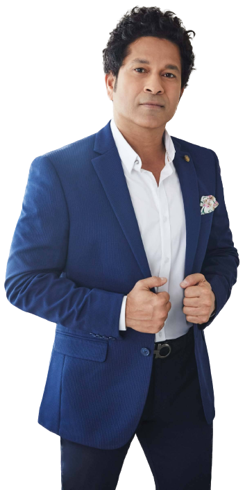

The full name of Sachin Tendulkar is Sachin Ramesh Tendulkar.
Sachin Tendulkar (born April 24, 1973, Bombay [Mumbai], India) Indian professional
cricket player, considered by many to be one of the greatest batsmen of all time.
In 2012he became the first cricketer to score 100 centuries (100 runs in a single innings) in international play.
Sachin holds the record for scoring a century in his debut match of Ranji Trophy, Duleep Trophy, and Deodhar]
Trophy.
Sachin started playing cricket at a very young age, and his talent was recognized early on.
He went for cricket in 1984 and was guided by famous Indian Cricket Coach Ramakant Achrekar.
He is regarded as the greatest batsman in the history of Indian cricket after Sir Vivian Richards and
Sir Donald George Bradman.
Sachin made his first Test debut on 15 November 1989 against Pakistan.
His nickname is Little Master, Master Blaster, God of Cricket.
Sachin debuted in test cricket and one day cricket against Pakistan in 1989.
Tendulkar played his 200th and final Test match in November 2013.